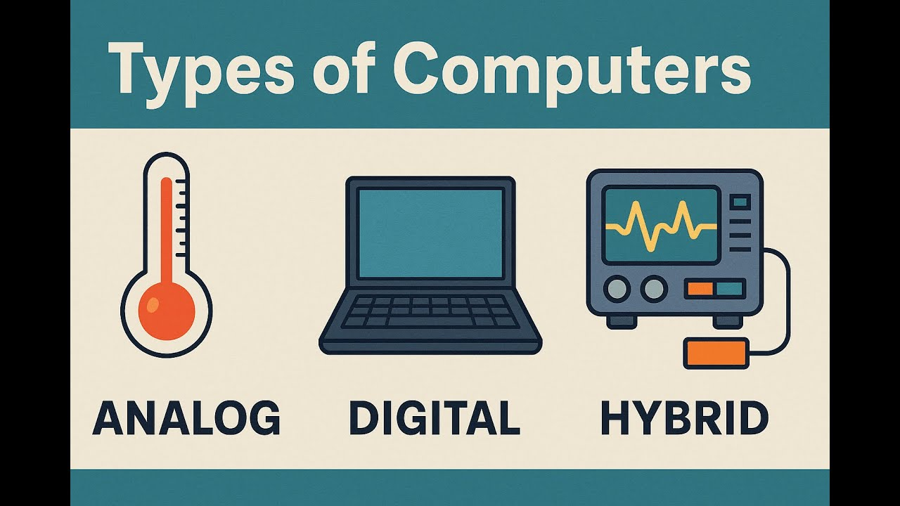
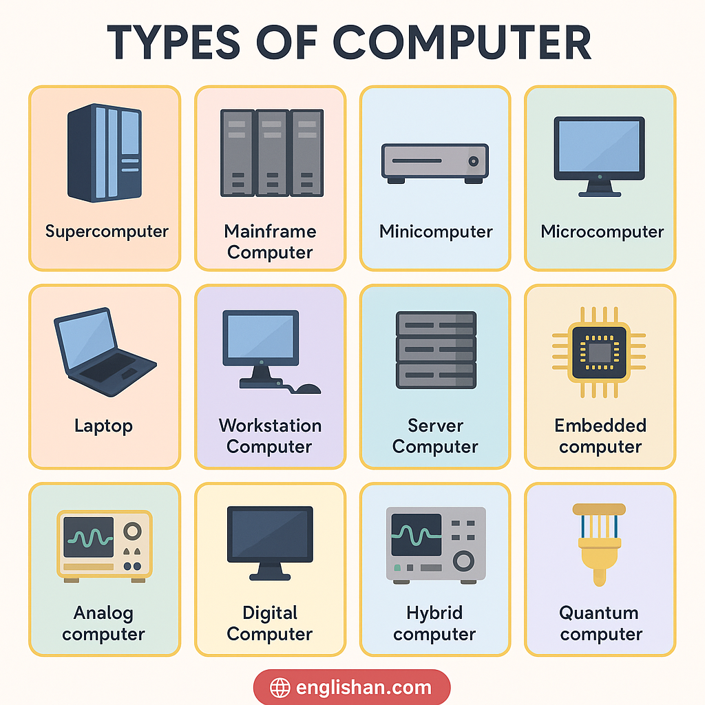
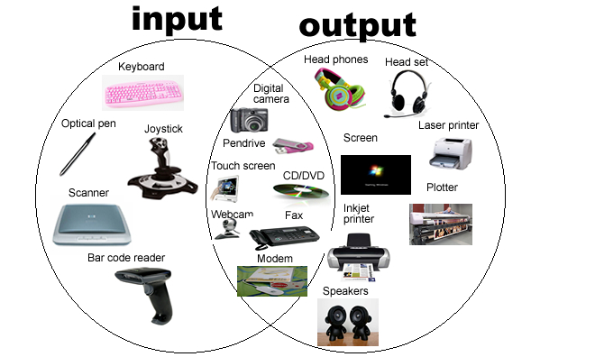
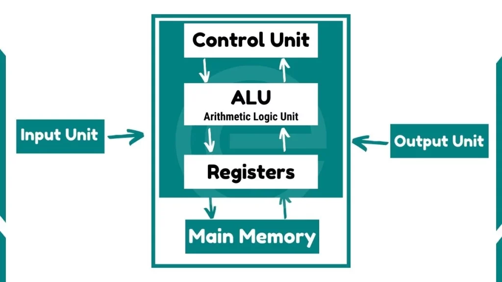
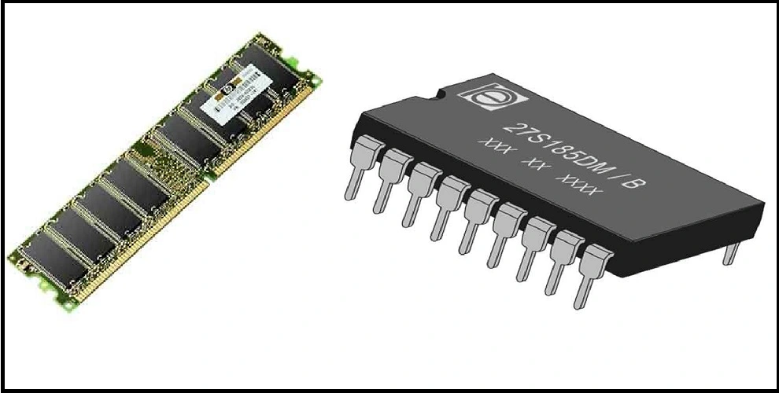
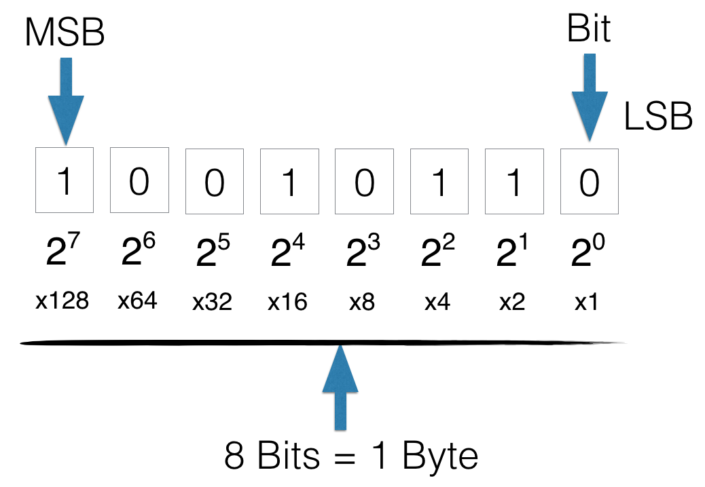
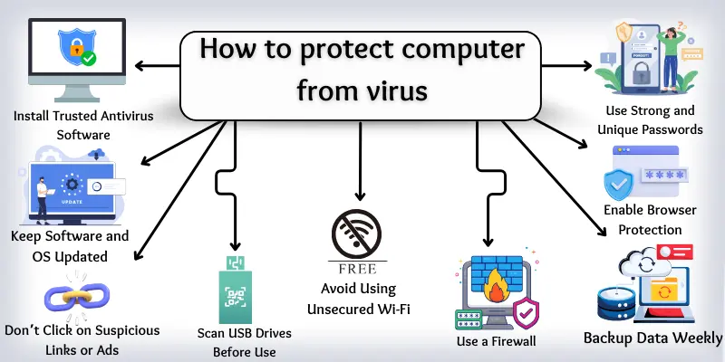
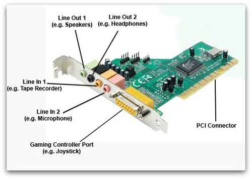

Computer Fundamentals Master Guide
A simple and detailed guide to understanding computers for Technology, Education, and Research.
1. What is a Computer?
A computer is a smart electronic machine. It takes information from you, works on it to solve problems, and then gives you the final answer. It also saves your work so you can look at it later. Because of this, it is often called a Data Processing Machine.
The Data Processing Cycle (How it works)
Think of it like cooking food:
- Data (Input): This is the raw information we give to the computer. (Like raw vegetables before cooking).
- Processing: This is when the computer works on the data to solve a problem. (Like cooking the vegetables on a stove).
- Output: This is the final result the computer gives back to us to use. (Like the cooked food ready to eat).

Where do we use computers?
Computers help us everywhere! We use them in Banking, Post Offices, Airlines, Astronomy (studying space), Astrology, Railways, Business, Medical Hospitals, and Education (schools and colleges).
2. History & Evolution of Computers
Father of the Computer: Charles Babbage (Born: 26.12.1791, Died: 18.10.1871). He was a very smart British Mathematics Professor who first imagined a machine that could calculate things automatically.

Timeline of Important Inventions
| Year | Invention Name | Inventor & Details |
|---|---|---|
| 3000 BC | Abacus | Ancient Origins (The very first manual calculating toy with beads) |
| 1642 | Pascaline | Blaise Pascal (First mechanical adding machine) |
| 1672 | Mechanical Calculator | Gottfried Wilhelm Leibniz |
| 1804 | Automated Loom | Joseph Marie Jacquard |
| 1822 | Difference Engine | Charles Babbage |
| 1842 | Analytical Engine | Charles Babbage (The first idea of a programmable computer) |
| 1937 | Mark 1 Computer | Howard H. Aiken |
| 1945 | ENIAC | J. Presper Eckert & John Mauchly (Electronic Numerical Integrator & Calculator) |
| 1946 | EDVAC | John von Neumann |
| 1948 | ABC Computer | John Atanasoff & Clifford Berry |
| 1950 | IBM 650 | The world's first mass-produced computer |
| 1960 | Mainframe Computer | Huge computers for large companies |
| 1968 | Minicomputer | Smaller and faster computers |
| 1980 | Supercomputer | The fastest computers for big research |
3. Types of Computers
We divide computers into groups based on What they do (Purpose) and How big they are (Size).
A. As per Purpose (ଗଣନା ଯନ୍ତ୍ର)
This tells us how the computer understands information. There are three types:
1. Digital Computer
This computer plays with numbers (0 and 1) and alphabets. We use it for normal calculations, typing reports, watching movies, and office work. You usually see these in your home or at a businessman's office.
2. Analog Computer
This computer measures things that are always changing, like temperature, speed, or pressure. It does not give an exact number, but it gives a very close guess. It is mostly used to predict the weather (ପାଣିପାଗ).
3. Hybrid Computer
This is a mix of both Digital and Analog computers. It can measure changing things AND do exact math. These are very important in hospital ICU rooms to check a patient's heartbeat.

B. As per Size (ଆକାର ଅନୁସାରେ)
This tells us how big and powerful the computer is:
1. Microcomputer (1974)
This is the smallest computer. We also call it a Personal Computer (PC) because it is meant for one person to use for homework, games, and typing. It is very easy to carry around (ଛୋଟ କମ୍ପୁଟର ନବା ଆଣିବା ସହଜରେ କରିପାରିବା).
2. Minicomputer (1968)
Known as the "elder brother". It is faster and has more storage and RAM than a tiny microcomputer.
3. Mainframe Computer (1960)
Known as the "grandfather". These are giant machines. They are super fast and have huge memory to help large banks and companies process millions of things at once.
4. Supercomputer (1980)
The biggest, fastest, and most powerful computer in the world. The first one was made by Seymour Cray. India's first supercomputer was named PARAM. Scientists use these for space research and defense.

4. Computer Parts (Hardware & Software)
A System means many different parts working together as a team to do a job. The computer system has three main team members:
Hardware
These are the physical parts of the computer. If you can touch it and see it with your eyes, it is hardware! Examples: The keyboard, mouse, wires, and the screen.
Software
These are the programs inside the computer. You cannot touch software. It is like the thoughts and rules that tell the hardware what to do.
Humanware
This means US! The humans, teachers, and students who turn on the computer and use it.

Input & Output Devices
How do we talk to the computer, and how does it talk back?
- Input Devices: These are tools we use to send our instructions INTO the computer. Examples: The Keyboard (to type), Mouse (to click), and Scanner (to take a photo of a paper and put it inside the screen).
- Output Devices: These are tools the computer uses to show us the final answer. They let us see the results (ଦେଖିବାକୁ ପାଇବା). Examples: The Monitor (the screen that shows a "soft copy"), and the Printer (prints ink on paper to give us a "print out").

The CPU (Central Processing Unit)
The CPU is the Brain and the Heart of the computer. Just like your brain solves math problems, the CPU solves computer problems. It has two main parts:
- C.U. (Control Unit): This is the Manager. It controls everything and tells all the other parts what to do step-by-step.
- A.L.U. (Arithmetic Logic Unit): This is the Math solver. It does all the plus, minus, multiply, and checking (like asking "is 5 bigger than 3?").

5. Computer Memory (Storage)
Memory is the computer's storage box. It is where the computer safely keeps your instructions, photos, and games so it can use them later.
1. Internal Memory (Main Memory)
This memory lives right next to the CPU Brain. Because it is so close, it is incredibly fast. The computer uses it while it is actively working on a task. It comes in two types:
RAM (Random Access Memory)
- You can Read from it and Write new things on it.
- It works randomly, so it finds things very fast.
- It is volatile. This means it forgets EVERYTHING if the electricity goes off! It only remembers while the computer is turned on.
ROM (Read Only Memory)
- You can only Read from it. You cannot change what is written inside.
- It keeps the computer's startup rules.
- It is non-volatile. It remembers everything perfectly even when the power is unplugged.

2. External Memory (Auxiliary Storage)
This is the permanent storage box. You use this to save your work, movies, and games safely for years. It is a little slower than Internal Memory, but it can hold a LOT more stuff.
A. Magnetic Storage (Uses Magnets)
- Floppy Disk: A very old, flexible square disk. In 1971 it was 8 inches big, then 5.25 inches, and finally 3.5 inches in 1987. It is cheap and easy to carry, but holds very little data (only 1MB to 1GB).
- Hard Disk: A large, heavy metal box fixed inside the computer. It spins like a record player. It is expensive but holds massive amounts of data (gigabytes and terabytes).
B. Optical Storage (Uses Lasers)
These are shiny, round discs that use bright laser lights to read your data instead of magnets.
- CD (Compact Disk): Good for storing songs and small software.
- DVD (Digital Versatile Disk): Can hold much more data than a CD, perfect for long movies.
6. Software & Operating Systems
Hardware is the body, but Software is the mind. The computer cannot do anything without software telling it how.
System Software (The Boss)
Also called the Operating System (OS). It is the main boss that controls the memory, files, and hardware.
- Windows: The most famous OS for computers at home and school.
- Linux / UNIX: A very safe, free OS used by big internet servers.
- Android: The OS that runs inside your mobile touchscreen phones!
Application Software (The Helper)
These are the specific "apps" you open to do your work.
- Word Processors: Like MS Word, used for typing letters.
- Spreadsheets: Like MS Excel, used for math and tables.
- DBMS: Used to safely store huge lists of information.
What you see on the Screen (GUI)
- Window: A square box on your screen where your program opens. You can have many windows open at once.
- Icon: A tiny, colorful picture that stands for a file or a game. When you double-click the icon, the game starts!
- Multi-User: A smart system where many students can use the same main CPU at the same time, sharing printers and files to save money.

Translators (Understanding the Computer)
Computers do not speak English or Odia. They only understand "Machine Code" (0s and 1s). A Translator is a special software that changes our English typed words into 0s and 1s so the computer can understand us.
- Assembler: Changes basic assembly codes into machine code.
- Compiler: Reads an entire book of code and translates it all at once.
- Interpreter: Reads and translates the code slowly, line-by-line.
7. Data & Number Systems
How does the computer store numbers and letters? It uses special number systems!
Binary System
The computer's favorite language. It uses only two numbers: 0 (Off) and 1 (On).
Decimal System
The normal numbers humans use every day: 0, 1, 2, 3, 4, 5, 6, 7, 8, and 9.
Hexadecimal System
A mix of numbers (0-9) and alphabets (A-F) used by programmers to write shorter code.

Units of Memory (How we measure storage)
| Name | Short Name | How big is it? |
|---|---|---|
| Bit | b | The smallest piece of data. It is just a single 0 or 1. |
| Nibble | - | 4 Bits grouped together. |
| Byte | B | 8 Bits. This is enough space to store one single letter, like 'A'. |
| Kilobyte | KB | 1,024 Bytes. |
| Megabyte | MB | 1,024 Kilobytes. |
| Gigabyte | GB | 1,024 Megabytes. (A movie is usually 1 or 2 GB). |
| Terabyte | TB | 1,024 Gigabytes. (Huge storage!). |
8. Networking & The Internet
Computer Network: When we connect two or more computers together using wires or Wi-Fi so they can share photos, games, and printers, it is called a network.

Types of Networks (By Size)
- LAN (Local Area Network): A small network inside one single room, school, or house.
- MAN (Metropolitan Area Network): A bigger network that connects computers across a whole city.
- WAN (Wide Area Network): A massive network that connects the whole world. The Internet you use on your phone is a WAN!
9. Security & Keeping Computers Safe
Just like we lock our house doors to stay safe from thieves, we need to protect our computers from bad software that wants to destroy our files.
Digital Threats (The Bad Guys)
- Computer Virus: A bad program that damages your files. It only spreads if you click on it.
କମ୍ପୁଟର ସିଷ୍ଟମ ଜାଣିନଥିବା ଲୋକକୁ ସିଷ୍ଟମ ବ୍ୟବହାର କରିବାକୁ ଦବନି I ଗୋଟିଏ ସିଷ୍ଟମ ରୁ ଅନ୍ୟ ସିଷ୍ଟମ କୁ File, folder, other share କରିବନି କାରଣ କିଛି ଭାଇରସ ରହିଯାଇପାରେ I - Worm: Like a virus, but it can jump from computer to computer on its own!
- Trojan Horse: A bad program pretending to be a fun game. When you open it, it attacks your computer.
- Ransomware: A program that locks your photos and asks for money to unlock them.
- Phishing: A fake email tricking you into giving away your password.
Defenses (The Good Guys)
- Antivirus: A guard program that scans your computer, finds viruses, and deletes them.
- Firewall: A digital wall that blocks bad hackers from entering your computer from the internet.
- Encryption: Scrambling your messages into a secret code so thieves cannot read them.
- Authentication: Using strong passwords or fingerprints to prove it is really you using the computer.

10. Multimedia
Multimedia: This means combining beautiful pictures, moving animations, graphics, and music together to make things fun and interactive (like playing a video game or watching a cartoon).
Sound Card
A special chip inside the computer that processes audio so you can record your voice or play songs.
Speaker
The device that pushes the sound out loud so you can hear the music and voices.
CD-ROM
A shiny disc used to hold big games, high-quality photos, and long audio files.
